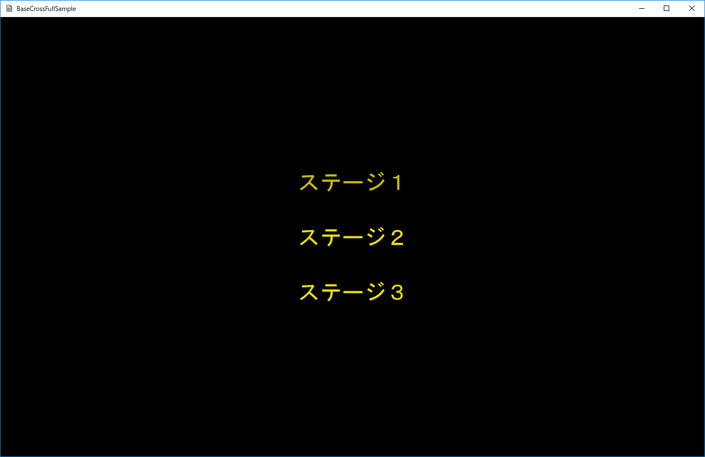

１．フルバージョンチュートリアル
１１５．ステージセレクト
このサンプルはFullTutorial015というディレクトリに含まれます。ステージを選択する
複数のステージで構成されるゲームを作成する場合、どのような記述がいいかは、いろいろ方法があるかと思いますが、このサンプルではその一般的な方法について説明します。サンプルを起動すると以下の画面が出てきます。これはステージ選択の画面です。

図0115a
画像が点滅してますので、コントローラの左スティック上下で移動させて、選択し、Ａボタンを押します。すると、ゲームステージが出てきます。

図0115ｂ
Ｂボタンでセレクト画面に戻ります。
ステージ３からステージ３までありますが、３が一番敵が多い形です。これらはmediaディレクトリ内にGameStage1.csv、GameStage2.csv、GameStage3.csvとして定義されています。
ステージ番号の変数
こういったステージ選択の仕組みを作る場合、最初に迷うのが現在の番号をどこに取っておくかという部分です。C言語だけで作成されるプログラムなら、グローバル変数として変数化するでしょうが、オブジェクト指向ではそうはしたくありません。
しかしSceneクラスであればプログラム中１つのインスタンスしかないので、そこに変数化しておきましょう。
以下はScene.hの宣言部です。
class Scene : public SceneBase {
//中略
//現在セレクトされているステージナンバー
int m_SrageNum;
public:
//中略
//ステージナンバーのアクセサ
int GetStageNum() const {
return m_SrageNum;
}
void SetStageNum(int i) {
m_SrageNum = i;
}
};
またこの変数はメンバイニシャライズによって1に初期化しています。
セレクトステージ
起動後最初に呼ばれるのがセレクトステージです。ここではクリエイト時に現在のステージ番号をシーンから取得してその番号のメニューを点滅させます。コントローラ左スティックの上下で選択を変えます。以下がそのコントローラの部分です。SelectStage::OnUpdate()に記述します。
void SelectStage::OnUpdate() {
//シーンの取得
auto PtrScene = App::GetApp()->GetScene<Scene>();
int StageNum = PtrScene->GetStageNum();
//コントローラの取得
auto CntlVec = App::GetApp()->GetInputDevice().GetControlerVec();
if (CntlVec[0].bConnected) {
//ゲームステージへ
//Aボタン
if (CntlVec[0].wPressedButtons & XINPUT_GAMEPAD_A) {
PostEvent(0.0f, GetThis<SelectStage>(), PtrScene, L"ToGameStage");
return;
}
if (!m_CntrolLock) {
if (CntlVec[0].fThumbLY >= 0.8f) {
StageNum--;
if (StageNum < 1) {
StageNum = 3;
}
m_CntrolLock = true;
PtrScene->SetStageNum(StageNum);
ChangeSelect(StageNum);
}
else if (CntlVec[0].fThumbLY <= -0.8f) {
StageNum++;
if (StageNum > 3) {
StageNum = 1;
}
m_CntrolLock = true;
PtrScene->SetStageNum(StageNum);
ChangeSelect(StageNum);
}
}
else {
if (CntlVec[0].fThumbLY == 0.0f) {
m_CntrolLock = false;
}
}
}
}
ゲームステージ
ゲームステージでは、現在のステージナンバーをもとに該当するcsvを読み込みます。csvを決定しているのは以下です。GameStage::OnCreate()です。
void GameStage::OnCreate() {
try {
//シーンの取得
auto PtrScene = App::GetApp()->GetScene<Scene>();
wstring DataDir;
App::GetApp()->GetDataDirectory(DataDir);
switch (PtrScene->GetStageNum()) {
case 1:
//CSVファイルの確定
m_GameStageCsv.SetFileName(DataDir + L"GameStage1.csv");
break;
case 2:
//CSVファイルの確定
m_GameStageCsv.SetFileName(DataDir + L"GameStage2.csv");
break;
case 3:
//CSVファイルの確定
m_GameStageCsv.SetFileName(DataDir + L"GameStage3.csv");
break;
default:
//それ以外はステージ1
//CSVファイルの確定
m_GameStageCsv.SetFileName(DataDir + L"GameStage1.csv");
break;
}
m_GameStageCsv.ReadCsv();
////CSVファイルそのBの読み込み
m_GameStageCsvB.SetFileName(DataDir + L"GameStageB.csv");
m_GameStageCsvB.ReadCsv();
//中略
}
catch (...) {
throw;
}
}
今回はステージセレクトの一般的な例を紹介しました。
複雑なステージ構成になっている場合は、この方法は使えないでしょう。
ただ、ゲームに共通する変数はシーンに置くという原則は決めておいてもいいと思います。
もちろんゲームデータクラスのようなクラスを作ってもいいですが、スコアや現在のステージ、あるいは、所得したアイテム数など、比較的単純なデータであればシーンに置く形でもいいのかなあと思います。